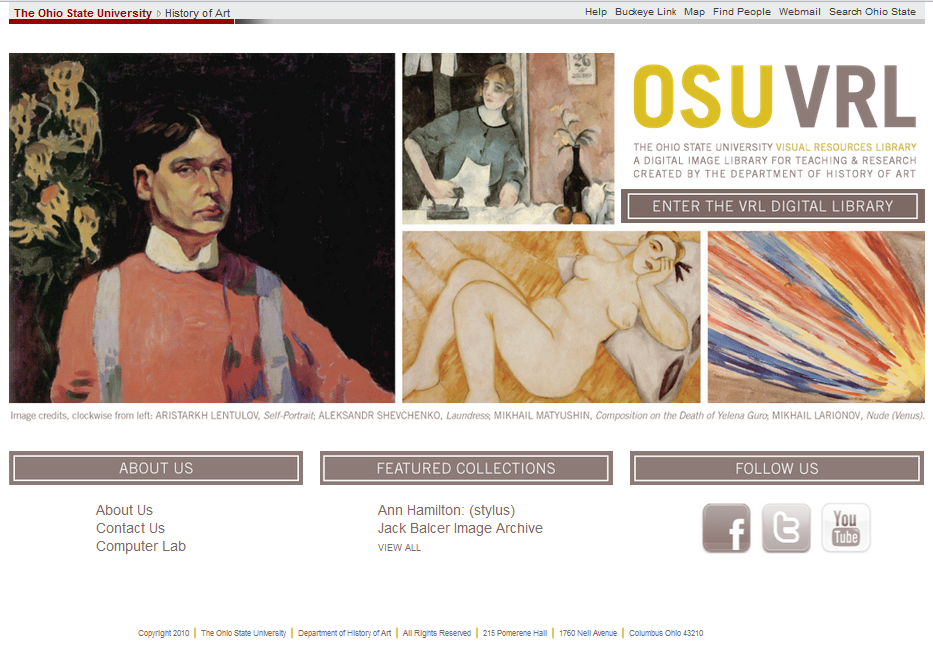

Ohio State University - Visual Resource Library System 
{kind=link}
Worked part-time in 2009-10 as the sole developer updating and improving the History of Art's digital asset management system. The goal of the project was to add features to the DAM that enabled collaboration and positioned the system as an educational tool. The major features are discussed below with screen shots.
{kind=link}
Saved Image System:
- Users create downloadable Power Point presentations, flash card PDF file, or Carousel Presentation
- Each user can curate their collection of saved images
- Users can upload their own images and videos. Or choose from the 1000s of prepared images.
- Course images shared between faculity.
{kind=link}
{kind=link}
{kind=link}
{kind=link}
Carousel System:
- A Carousel is a group of images assembled that can be transformed into a Power Point presentation, Flash Card deck, or an online presentation.
- A media rich online presenation can be made using an online slide based editor.
- The carousel allows from an online power point like presentation that has zoom-able images, video, embedded web content, and real-time color correction.
- The carousel presentation can be edited and presented online or it can be edited online and downloaded into a formated power point presentation.
- The online carousel presentation is desinged to work
with class room projectors and works well with browsers
capable of full screen mode. - Carousel can be shared with students who can view it
online, download a PPT or create a flash card deck based
on the presentation. - All features of the site are IE 7+ compatible.
{kind=link}
{kind=link}
{kind=link}
{kind=link}
Leverages Apache Solr search engine to allow:
- Fuzzy searching and recommendations.
- Faceted browsing to explore the collection.
- Filtering search results by facets
{kind=link}
{kind=link}
Media Tools
- Using Adobe Scene7 Image server to allow high quality zoom-able images.
- Create high resoultion detail images for use in presentations and downloads.
- Upload video can be used in online carousel presntations or viewed at the record level.
Admin and Workflow
- Utilizes features such as inline editing and bulk editing to streamline maintenance and adding new images.
- User management integrated with university login system and ability for admin to assume the role of a user to aid faculty in using the system and troubleshoot usability issues.
- Featured collection system avaible to display special collections and present them within the university or to the public.